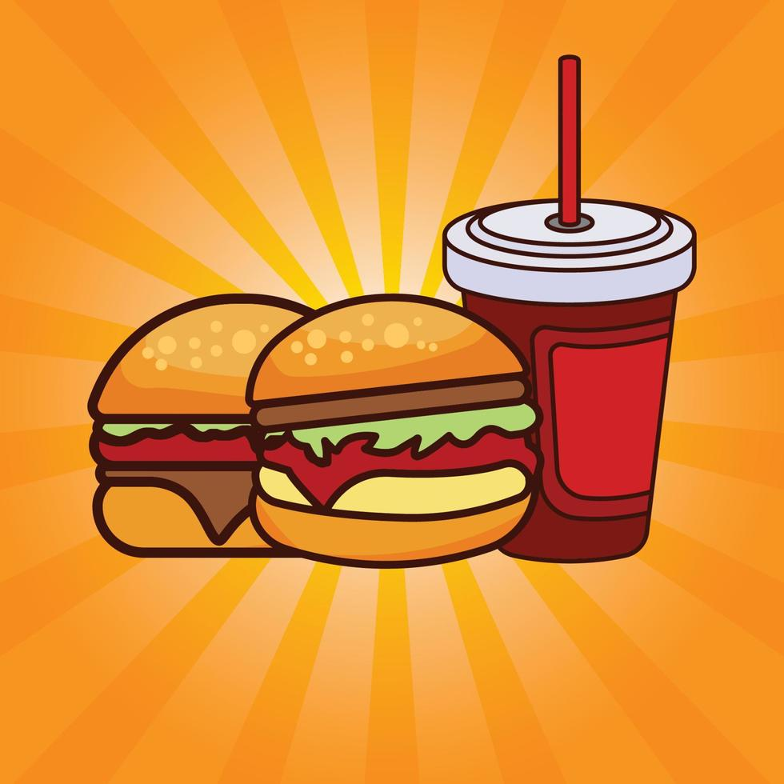

Sobre nuestros productos
Cangreburguer es una empresa emergente en el sector gastronómico dedicada a la
elaboración y comercialización de hamburguesas de alta calidad. Fundada con la visión de
elevar los estándares de la comida casual, nos posicionamos como una alternativa diferenciada
que combina la eficiencia del servicio con la excelencia culinaria, ofreciendo a nuestros
clientes una experiencia gastronómica única y confiable.:
1.Nuestra misión principal es Comercializar hamburguesas de alta calidad a través de una
Comercializar hamburguesas de alta calidad a través de una selección rigurosa de los mejores
insumos del mercado, ofreciendo un servicio ágil, estandarizado y confiable que garantice la
total satisfacción de nuestros comensales.
2.Materia Prima Seleccionada: Utilizamos cortes de carne 100% de res, procesados bajo rigurosos
controles de higiene para asegurar su frescura, textura y jugosidad.
3.Innovación en Sabor: Desarrollamos aderezos y combinaciones propias mediante un proceso constante
pruebas culinarias, lo que nos permite ofrecer un menú vanguardista y adaptado a paladares exigentes.
4. Medallones de Res Premium: Tortas de carne 100% de res con un porcentaje de grasa
controlado para garantizar jugosidad y sabor tras el proceso de sellado en plancha.

6. Queso Cheddar Procesado: Adquirido en rebanadas de fundido rápido, ideal para lograr la
textura óptima sobre la proteína caliente.
7.Salsas y Aderezos Base: Selección de salsas tradicionales (kétchup, mostaza, mayonesa) y
aderezos especiales formulados por proveedores industriales exclusivos para nuestra marca,
asegurando un perfil de sabor único y constante.
8.Porciones de Papas Fritas: Papas de corte tradicional pre-fritas y congeladas, seleccionadas
por su bajo nivel de absorción de aceite y su retención de temperatura.
9. Portafolio de Bebidas: Alianza directa con distribuidoras de bebidas carbonatadas, jugos y
aguas embotelladas para el despacho inmediato en barra.
Cangreburguer es una empresa emergente en el sector gastronómico dedicada a la elaboración y comercialización de hamburguesas de alta calidad. Fundada con la visión de elevar los estándares de la comida casual, nos posicionamos como una alternativa diferenciada que combina la eficiencia del servicio con la excelencia culinaria, ofreciendo a nuestros clientes una experiencia gastronómica única y confiable.:
1.Nuestra misión principal es Comercializar hamburguesas de alta calidad a través de una Comercializar hamburguesas de alta calidad a través de una selección rigurosa de los mejores insumos del mercado, ofreciendo un servicio ágil, estandarizado y confiable que garantice la total satisfacción de nuestros comensales.
2.Materia Prima Seleccionada: Utilizamos cortes de carne 100% de res, procesados bajo rigurosos controles de higiene para asegurar su frescura, textura y jugosidad.
3.Innovación en Sabor: Desarrollamos aderezos y combinaciones propias mediante un proceso constante pruebas culinarias, lo que nos permite ofrecer un menú vanguardista y adaptado a paladares exigentes.
4. Medallones de Res Premium: Tortas de carne 100% de res con un porcentaje de grasa controlado para garantizar jugosidad y sabor tras el proceso de sellado en plancha.

6. Queso Cheddar Procesado: Adquirido en rebanadas de fundido rápido, ideal para lograr la textura óptima sobre la proteína caliente.
7.Salsas y Aderezos Base: Selección de salsas tradicionales (kétchup, mostaza, mayonesa) y aderezos especiales formulados por proveedores industriales exclusivos para nuestra marca, asegurando un perfil de sabor único y constante.
8.Porciones de Papas Fritas: Papas de corte tradicional pre-fritas y congeladas, seleccionadas por su bajo nivel de absorción de aceite y su retención de temperatura.
9. Portafolio de Bebidas: Alianza directa con distribuidoras de bebidas carbonatadas, jugos y aguas embotelladas para el despacho inmediato en barra.
 Derechos reservados © 2026 Jonathan Escobar Dennis Peréz Jefferson Vásquez
Derechos reservados © 2026 Jonathan Escobar Dennis Peréz Jefferson Vásquez